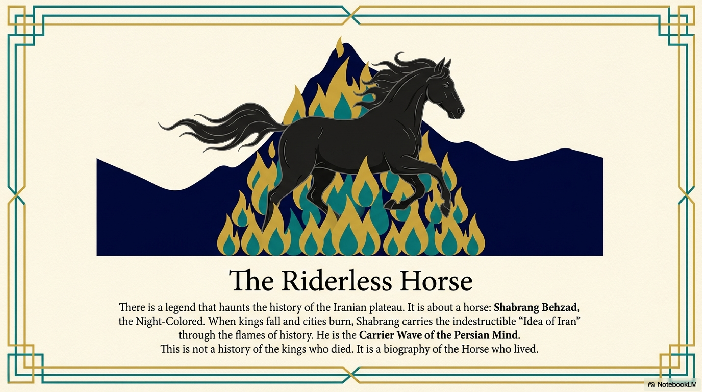
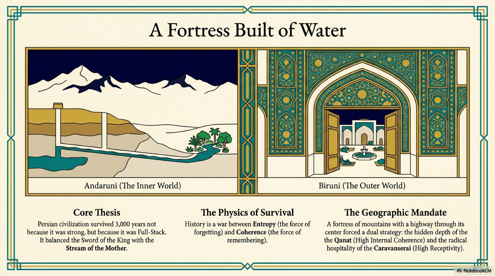
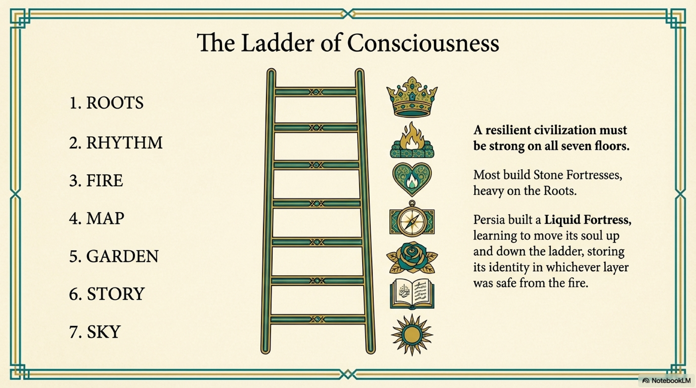
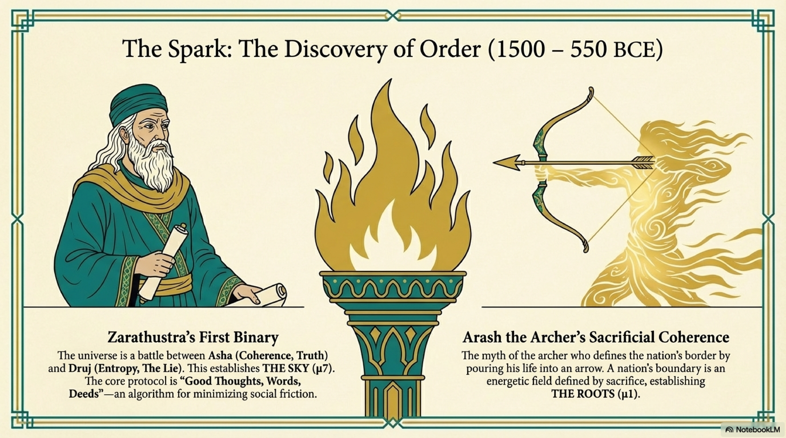

For two hundred years following the Arab conquest, the Persian language seemed to disappear from the record of history.
Historians call this period the "Two Centuries of Silence." From the year 650 to 850 AD, the business of the world was conducted in Arabic. It was the language of the Quran, the language of the court, the language of science, and the language of the law. If you wanted to argue a case, write a poem, or calculate the stars, you did it in Arabic.
To the outside observer, it looked like the Persian Mind had been overwritten. The Roots (Level 1) had been conquered. The Map (Level 4) had been translated.
But silence is not the same as death.
While the public square fell silent, the private sphere did not. The Persian language did not die; it simply moved indoors. It retreated from the library to the kitchen, from the podium to the nursery.
It was saved not by the scribes, but by the mothers.

In our structural analysis, we distinguish between the Outer architecture of the State and the Inner architecture of the Home.
The State relies on rigidity. It demands a standardized language for taxation and governance. When the Arabs took the State, the men of Persia—the bureaucrats, the soldiers, the merchants—had to adapt. They learned Arabic to survive in the new economy. They became bilingual. Their internal map began to shift.
But the Home relies on The Rhythm (Level 2). It relies on the daily, cyclical patterns of life: eating, sleeping, birthing, dying.
The Arab conquerors did not enter the Persian home. They did not stand over the cradles. They did not sit at the Sofreh, the dinner cloth spread on the floor.
In this protected zone, the Persian language remained the operating system.
The mothers continued to sing lullabies in Persian. They continued to name the ingredients of the stew in Persian. They continued to tell the stories of the Divs and the Fairies in Persian.
They created a Linguistic Ark.

Why was this preservation so effective? Because the mother tongue is not just a collection of words. It is the carrier wave for The Fire (Level 3). It is the language of emotion.
You can conduct business in a second language. You can even write philosophy in a second language. But you rarely weep in a second language. You rarely soothe a terrified child in a second language.
The women of Iran understood, perhaps unconsciously, that the emotional integrity of the family depended on the continuity of the language. If they began to speak Arabic to their children, they would sever the link to the ancestors. They would break the chain of memory.
So, they built a firewall.
Outside the door, the world was Semitic, monotheistic, and abstract. Inside the door, the world remained Indo-European, poetic, and deeply rooted in the ancient soil.
This was the Nursery Protocol in action. It ensured that every child born in Iran, even under the Caliphate, received a Persian soul before they received an Islamic education.

This domestic strategy is the reason why, when the political grip of the Caliphate began to loosen in the 9th century, the Persian language exploded back onto the stage of history.
It did not return as a broken, pidgin dialect. It returned fully formed, rich, complex, and capable of high art.
When the first new Persian dynasties arose in the East, the poets did not have to invent a new language. They simply started writing down what their mothers had been singing to them for two hundred years.
This effectively rebooted the civilization.
In Egypt, the grandmother eventually stopped speaking Coptic. In Syria, the grandmother stopped speaking Aramaic. The chain was broken, and the civilizations were assimilated.
In Iran, the grandmother refused to stop speaking.
She proved that the soft power of the home is more durable than the hard power of the state. She proved that a language protected by law is harder to kill than a language protected by love.
The Silence was not an end. It was an incubation.
And from that incubation, a new kind of mind was about to emerge. A mind that could speak Arabic to God, but Persian to its own heart.
It was time for the Master of Logos.